description: Defines per-stage texture-blending operations. ms.assetid: 7bfdcb15-c3c3-4e7e-b924-6ecfa350e2f3 title: D3DTEXTUREOP enumeration (D3D9Types.h) ms.topic: reference ms.date: 05/31/2018 topic_type:
Defines per-stage texture-blending operations.
typedef enum D3DTEXTUREOP {
D3DTOP_DISABLEÂ Â Â Â Â Â Â Â Â Â Â Â Â Â Â Â Â Â Â Â = 1,
D3DTOP_SELECTARG1Â Â Â Â Â Â Â Â Â Â Â Â Â Â Â Â Â = 2,
D3DTOP_SELECTARG2Â Â Â Â Â Â Â Â Â Â Â Â Â Â Â Â Â = 3,
D3DTOP_MODULATEÂ Â Â Â Â Â Â Â Â Â Â Â Â Â Â Â Â Â Â = 4,
D3DTOP_MODULATE2XÂ Â Â Â Â Â Â Â Â Â Â Â Â Â Â Â Â = 5,
D3DTOP_MODULATE4XÂ Â Â Â Â Â Â Â Â Â Â Â Â Â Â Â Â = 6,
D3DTOP_ADDÂ Â Â Â Â Â Â Â Â Â Â Â Â Â Â Â Â Â Â Â Â Â Â Â = 7,
D3DTOP_ADDSIGNEDÂ Â Â Â Â Â Â Â Â Â Â Â Â Â Â Â Â Â = 8,
D3DTOP_ADDSIGNED2XÂ Â Â Â Â Â Â Â Â Â Â Â Â Â Â Â = 9,
D3DTOP_SUBTRACTÂ Â Â Â Â Â Â Â Â Â Â Â Â Â Â Â Â Â Â = 10,
D3DTOP_ADDSMOOTHÂ Â Â Â Â Â Â Â Â Â Â Â Â Â Â Â Â Â = 11,
D3DTOP_BLENDDIFFUSEALPHAÂ Â Â Â Â Â Â Â Â Â = 12,
D3DTOP_BLENDTEXTUREALPHAÂ Â Â Â Â Â Â Â Â Â = 13,
D3DTOP_BLENDFACTORALPHAÂ Â Â Â Â Â Â Â Â Â Â = 14,
D3DTOP_BLENDTEXTUREALPHAPMÂ Â Â Â Â Â Â Â = 15,
D3DTOP_BLENDCURRENTALPHAÂ Â Â Â Â Â Â Â Â Â = 16,
D3DTOP_PREMODULATEÂ Â Â Â Â Â Â Â Â Â Â Â Â Â Â Â = 17,
D3DTOP_MODULATEALPHA_ADDCOLORÂ Â Â Â Â = 18,
D3DTOP_MODULATECOLOR_ADDALPHAÂ Â Â Â Â = 19,
D3DTOP_MODULATEINVALPHA_ADDCOLORÂ Â = 20,
D3DTOP_MODULATEINVCOLOR_ADDALPHAÂ Â = 21,
D3DTOP_BUMPENVMAPÂ Â Â Â Â Â Â Â Â Â Â Â Â Â Â Â Â = 22,
D3DTOP_BUMPENVMAPLUMINANCEÂ Â Â Â Â Â Â Â = 23,
D3DTOP_DOTPRODUCT3Â Â Â Â Â Â Â Â Â Â Â Â Â Â Â Â = 24,
D3DTOP_MULTIPLYADDÂ Â Â Â Â Â Â Â Â Â Â Â Â Â Â Â = 25,
D3DTOP_LERPÂ Â Â Â Â Â Â Â Â Â Â Â Â Â Â Â Â Â Â Â Â Â Â = 26,
D3DTOP_FORCE_DWORDÂ Â Â Â Â Â Â Â Â Â Â Â Â Â Â Â = 0x7fffffff
} D3DTEXTUREOP, *LPD3DTEXTUREOP;
D3DTOP_DISABLE
Disables output from this texture stage and all stages with a higher index. To disable texture mapping, set this as the color operation for the first texture stage (stage 0). Alpha operations cannot be disabled when color operations are enabled. Setting the alpha operation to D3DTOP_DISABLE when color blending is enabled causes undefined behavior.
D3DTOP_SELECTARG1
Use this texture stage's first color or alpha argument, unmodified, as the output. This operation affects the color argument when used with the D3DTSS_COLOROP texture-stage state, and the alpha argument when used with D3DTSS_ALPHAOP.
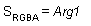
D3DTOP_SELECTARG2
Use this texture stage's second color or alpha argument, unmodified, as the output. This operation affects the color argument when used with the D3DTSS_COLOROP texture stage state, and the alpha argument when used with D3DTSS_ALPHAOP.
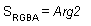
D3DTOP_MODULATE
Multiply the components of the arguments.
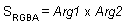
D3DTOP_MODULATE2X
Multiply the components of the arguments, and shift the products to the left 1 bit (effectively multiplying them by 2) for brightening.
D3DTOP_MODULATE4X
Multiply the components of the arguments, and shift the products to the left 2 bits (effectively multiplying them by 4) for brightening.
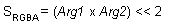
D3DTOP_ADD
Add the components of the arguments.
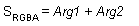
D3DTOP_ADDSIGNED
Add the components of the arguments with a - 0.5 bias, making the effective range of values from - 0.5 through 0.5.
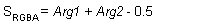
D3DTOP_ADDSIGNED2X
Add the components of the arguments with a - 0.5 bias, and shift the products to the left 1 bit.
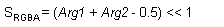
D3DTOP_SUBTRACT
Subtract the components of the second argument from those of the first argument.
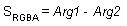
D3DTOP_ADDSMOOTH
Add the first and second arguments; then subtract their product from the sum.
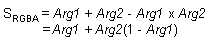
D3DTOP_BLENDDIFFUSEALPHA
Linearly blend this texture stage, using the interpolated alpha from each vertex.
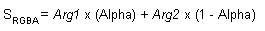
D3DTOP_BLENDTEXTUREALPHA
Linearly blend this texture stage, using the alpha from this stage's texture.
D3DTOP_BLENDFACTORALPHA
Linearly blend this texture stage, using a scalar alpha set with the D3DRS_TEXTUREFACTOR render state.
D3DTOP_BLENDTEXTUREALPHAPM
Linearly blend a texture stage that uses a premultiplied alpha.
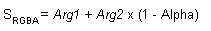
D3DTOP_BLENDCURRENTALPHA
Linearly blend this texture stage, using the alpha taken from the previous texture stage.
D3DTOP_PREMODULATE
D3DTOP_PREMODULATE is set in stage n. The output of stage n is arg1. Additionally, if there is a texture in stage n + 1, any D3DTA_CURRENT in stage n + 1 is premultiplied by texture in stage n + 1.
D3DTOP_MODULATEALPHA_ADDCOLOR
Modulate the color of the second argument, using the alpha of the first argument; then add the result to argument one. This operation is supported only for color operations (D3DTSS_COLOROP).
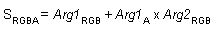
D3DTOP_MODULATECOLOR_ADDALPHA
Modulate the arguments; then add the alpha of the first argument. This operation is supported only for color operations (D3DTSS_COLOROP).
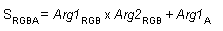
D3DTOP_MODULATEINVALPHA_ADDCOLOR
Similar to D3DTOP_MODULATEALPHA_ADDCOLOR, but use the inverse of the alpha of the first argument. This operation is supported only for color operations (D3DTSS_COLOROP).
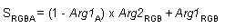
D3DTOP_MODULATEINVCOLOR_ADDALPHA
Similar to D3DTOP_MODULATECOLOR_ADDALPHA, but use the inverse of the color of the first argument. This operation is supported only for color operations (D3DTSS_COLOROP).
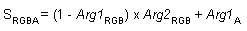
D3DTOP_BUMPENVMAP
Perform per-pixel bump mapping, using the environment map in the next texture stage, without luminance. This operation is supported only for color operations (D3DTSS_COLOROP).
D3DTOP_BUMPENVMAPLUMINANCE
Perform per-pixel bump mapping, using the environment map in the next texture stage, with luminance. This operation is supported only for color operations (D3DTSS_COLOROP).
D3DTOP_DOTPRODUCT3
Modulate the components of each argument as signed components, add their products; then replicate the sum to all color channels, including alpha. This operation is supported for color and alpha operations.
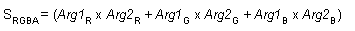
In DirectX 6 and DirectX 7, multitexture operations the above inputs are all shifted down by half (y = x - 0.5) before use to simulate signed data, and the scalar result is automatically clamped to positive values and replicated to all three output channels. Also, note that as a color operation this does not updated the alpha it just updates the RGB components.
However, in DirectX 8.1 shaders you can specify that the output be routed to the .rgb or the .a components or both (the default). You can also specify a separate scalar operation on the alpha channel.
D3DTOP_MULTIPLYADD
Performs a multiply-accumulate operation. It takes the last two arguments, multiplies them together, and adds them to the remaining input/source argument, and places that into the result.
SRGBA = Arg1 + Arg2 * Arg3
D3DTOP_LERP
Linearly interpolates between the second and third source arguments by a proportion specified in the first source argument.
SRGBA = (Arg1) * Arg2 + (1- Arg1) * Arg3.
D3DTOP_FORCE_DWORD
Forces this enumeration to compile to 32 bits in size. Without this value, some compilers would allow this enumeration to compile to a size other than 32 bits. This value is not used.
The members of this type are used when setting color or alpha operations by using the D3DTSS_COLOROP or D3DTSS_ALPHAOP values with the IDirect3DDevice9::SetTextureStageState method.
In the above formulas, SRGBA is the RGBA color produced by a texture operation, and Arg1, Arg2, and Arg3 represent the complete RGBA color of the texture arguments. Individual components of an argument are shown with subscripts. For example, the alpha component for argument 1 would be shown as Arg1A.
| Requirement | Value |
|---|---|
| Header | D3D9Types.h |
Â
Â